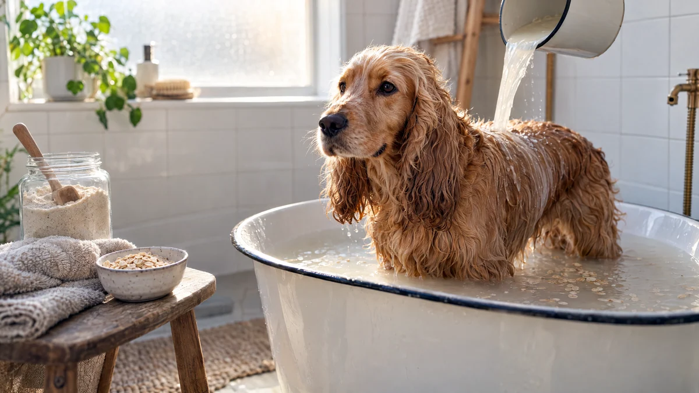

RESTFEST · HUSDJUR
Lugnande havrebad för hund med kliande hud
Ett par deciliter havregryn mals till ett fint mjöl som gör badvattnet mjölkigt och mjukt. Hunden får stå i det ljumma vattnet medan du öser och masserar, och huden lugnas utan parfym eller starka tvättmedel. Ett spabad för hunden, gjort på frukostens havregryn.
- Förberedelse
- 5 min
- Verkningstid
- 10 min
- Räcker till
- 1 bad för en medelstor hund
- Nivå
- Nybörjare
Bra att veta. Djur tål inte allt vi tål. Använd aldrig choklad, russin eller vindruvor, lök, vitlök, avokado, macadamianötter, alkohol, koffein eller xylitol, ett sötningsmedel som finns i vissa jordnötssmör och sockerfria produkter. Använd inga eteriska oljor, de kan vara giftiga, särskilt för katter. Godis bör vara högst en tiondel av djurets dagliga mat. Fråga veterinären om ditt djur har allergier, övervikt eller en sjukdom.
 Det här behöver du
Det här behöver du
Tryck på + vid det du behöver köpa.
Gör så här
- Mixa havregrynen till ett fint mjöl i en mixer eller matberedare. Rör ner en tesked i ett glas vatten. Blir vattnet mjölkigt är mjölet fint nog.
- Fyll badkaret eller en stor balja med ljummet vatten, ungefär kroppstemperatur, så att det når upp till hundens mage. Rör ner havremjölet tills vattnet är mjölkigt.
- Lyft ner hunden och ös vattnet över ryggen, magen och benen med en kopp. Undvik öron, ögon och nos.
- Massera havrevattnet ner i pälsen och huden i ca 10 minuter, gärna med lugna, långa tag.
- Skölj lätt med rent, ljummet vatten, så att inga klumpar blir kvar i pälsen.
- Krama ur pälsen och torka hunden noga med handdukar, särskilt mellan tårna och i armhålorna.
Presentation och användning
- Fyll havremjölet i en glasburk med en skopa och knyt en liten hundhandduk runt den, en fin present till en ny valpägare.
- För en liten hund går det bra att bada i diskhon eller handfatet.
- Ge en godisbit (recept 111) efter badet, så blir det en trevligare upplevelse nästa gång.
- Bada inte oftare än en gång i veckan, för ofta kan torka ut huden.
Bra att veta
- Klåda kan bero på parasiter, allergi eller infektion. Gå till veterinären om den inte går över, eller om huden är röd, fuktig eller har sår.
- Använd ljummet vatten, aldrig varmt.
- Använd aldrig schampo för människor på hunden.
- Katter tycker oftast illa om bad. Fråga veterinären om din katt kliar sig.